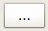

|
| Ubicación en el Menú |
|---|
| Plot → Guardar gráfico |
| Entornos de trabajo |
| Plot |
| Atajo de teclado por defecto |
| None |
| Ver también |
| None |
Descripción
La herramienta de guardado de gráficos le permite salvar los gráficos creados por usted o por otras herramientas de FreeCAD. Además permite elegir el tamaño y resolución del archivo de salida.

Cómo usar ésta herramienta
Selecciona el gráfico que deseas salvar mediante las pestañas de la vista principal y ejecuta esta herramienta. Puede usar el botón de selección de rutas para que se muestre un cuadro de diálogo de selección de archivo donde podrá especificar la ruta de la imagen a szalvar y su formato.
 Path selection button
{kind=link}
Opciones
- Ruta de archivo: Puedes especificar la ruta del archivo a guardar (incluyendo su extensión) editándolo el la lñinea de texto.
- Tamaño: Permite especificar el ancho y alto de la imagen a generar (en pulgadas).
- dpi: Permite establecer los puntos por pulgada que se generarán en la imagen. La resolución final (en pixels) resultará de la multiplicación del tamaño de la imagen por los puntos por pulgada especificados.
Scripting
La herramienta de guardado puede ser empleada desde los macros y la consola de Python mediante la siguiente instrucción:
save(str, (float, float), float) : Guarda el gráfico en el directorio especificado, con el tamaño y la resolución elegidas.
Ejemplo:
import Plot
Plot.save("~/example.pdf", (12.8, 9.6), 50)
Lo que guardará la imagen como archivo pdf de 12.8x9.6 pulgadas, con una resolución de 640x480 pixels.